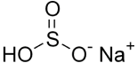

Blog
THE IMPORTANCE OF ACCURATE DOSING OF SODIUM BISULFITE
Sodium bisulphite or sodium hydrogen sulphite, whose formula is NaHSO3, is an inorganic salt solution. It is a moderately reducing agent and can release sulfur dioxide when coming in contact with air. When it is disposed of incorrectly, i.e. without neutralization, it can contaminate soil, water and even living beings in the environment...
DEMINERALIZED WATER

Demineralized water, also known as deionized water, is characterized by its purity, being free of minerals, ions and heavy metals. It is often used in industrial equipment and is an ingredient in the manufacture of beverages, food and cosmetics. It's worth noting that although it is pure, it is unfit for consumption. In addition to not quenching your thirst, it is also useless for the body, as it lacks the mineral salts necessary for the maintenance and balance of our organism...
SLUDGE DEWATERING AND DRYING

Wastewater treatment is one of the most important sectors within an industry. An adequate infrastructure allows all the waste generated during the processes to be reused in an intelligent and environmentally friendly way...
EFFLUENT DISPOSAL

Water is an essential raw material in industry and its use is present in most of these processes. As a result, a large amount of liquid waste called industrial effluents is generated. It is important to note that this waste concentrates a large quantity of chemical elements and contaminants, which vary according to the industrial segment in which they were used...
SODIUM BISULFITE

Sodium bisulphite or sodium hydrogen sulphite, whose formula is NaHSO3, is an inorganic salt solution. It is a moderately reducing agent and can release sulphur dioxide when it comes into contact with air. When disposed of incorrectly, i.e. in the environment without neutralization, it can contaminate soil, water and even living beings...